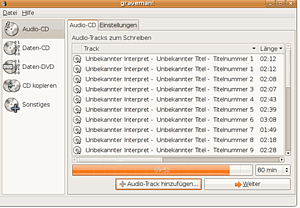
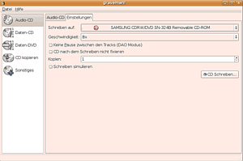

Graveman
Archivierte Anleitung
Dieser Artikel wurde archiviert, da er - oder Teile daraus - nur noch unter einer älteren Ubuntu-Version nutzbar ist. Diese Anleitung wird vom Wiki-Team weder auf Richtigkeit überprüft noch anderweitig gepflegt. Zusätzlich wurde der Artikel für weitere Änderungen gesperrt.
Hinweis:
Dieses Projekt wurde seit Juni 2006 nicht mehr weiterentwickelt. Es wird empfohlen, auf ein anderes Brennprogramm auszuweichen!
Zum Verständnis dieses Artikels sind folgende Seiten hilfreich:
Graveman  ist ein universelles Brennprogramm, mit dem man Audio-CDs aus .wav-, .ogg-, .mp3- und .flac-Dateien erstellen, Daten-CDs/DVDs erstellen, ISO-Dateien erstellen und brennen und CDs kopieren kann. Graveman beherrscht auch den Umgang mit Multisession-CDs.
ist ein universelles Brennprogramm, mit dem man Audio-CDs aus .wav-, .ogg-, .mp3- und .flac-Dateien erstellen, Daten-CDs/DVDs erstellen, ISO-Dateien erstellen und brennen und CDs kopieren kann. Graveman beherrscht auch den Umgang mit Multisession-CDs.
Installation¶
Graveman wird über folgendes Paket installiert:
graveman (universe, [2])
Nach der Installation findet man unter GNOME einen Menüeintrag unter
"Anwendungen -> Zubehör -> Graveman".
Konfiguration¶
Graveman muss nicht im eigentlichen Sinne konfiguriert werden, es gibt jedoch einige globale Einstellmöglichkeiten, welche im Menü "Datei -> Einstellungen" zu finden sind. Hier kann man z.B. im Reiter "Allgemein" einstellen, ob beispielsweise Überbrennen grundsätzlich erlaubt ist oder wie mit CD-RWs verfahren werden soll. Im Reiter "Externe Programme" erkennt man, auf welche Programme bzw. Audiokonverter Graveman zurückgreift, außerdem können hier bei Bedarf zusätzlich Parameter für deren Programmaufruf eingegeben werden. Im Reiter "Laufwerke" zeigt Graveman an, welche (CD/DVD) Laufwerke nutzbar sind, im Reiter "Zeichensätze" erkennt man, welche Zeichensätze für ISO-Images zur Verfügung stehen. Außerdem im Reiter "Allgemein" braucht man in der Regel keine Änderungen vorzunehmen.
Benutzung¶
Wie oben bereits erwähnt, kann Graveman verschiedene Arten von CDs/DVDs erstellen:
Audio-CD¶
Um eine Audio-CD zu brennen, klickt man im linken Menü auf "Audio-CD" oder wählt "Datei -> Eine Audio-CD erstellen". Anschließend klickt man rechts unten auf die Schaltfläche "Audio Track hinzufügen", um die zu brennenden Lieder auszuwählen. Graveman kann sowohl mit .wav- als auch mit .mp3-, .ogg- und .flac-Dateien umgehen, wobei die komprimierten Formate vor dem Brennen temporär in .wav-Dateien gewandelt werden.
Hinweis:
Um die komprimierten Formate .mp3 und .ogg als Audio-CD zu brennen, muss sox installiert sein, für .flac-Dateien muss flac installiert sein, siehe auch Abschnitt "Konfiguration"

Im unteren Bereich des Fensters ist eine Balkenanzeige, in der der verbleibende Speicherplatz auf der CD zu sehen ist. Weiterhin kann man im Pulldown-Menü auf der rechten unteren Seite die zu beschreibende Größe der CD (in Minuten) einstellen.
Hat man alle als Audio-CD zu brennenden Dateien zusammengestellt, klickt man auf "Weiter". Nun kann man weitere Einstellungen vornehmen wie Anzahl der Kopien, Schreibgeschwindigkeit etc. Zum Schluss klickt man auf "CD Schreiben", um den Brennvorgang zu starten. Nun wird man aufgefordert, eine leere CD oder CD-RW einzulegen. Nach einer Sicherheitsabfrage beginnt der Brennvorgang, wobei Graveman eine Fortschrittsanzeige einblendet.
Daten-CD/Daten-DVD¶
Das Erstellen einer Daten-DVD entspricht dem Erstellen einer Daten-CD, jedoch sind beide trotzdem getrennt im Menü aufgeführt. Als erstes wählt man die zu brennenden Dateien aus, dazu klickt man rechts unten auf die Schaltfläche "Daten auswählen". Analog zur Audio-CD sieht man im unteren Fensterbereich eine Füllstandanzeige, außerdem kann man die maximale Größe der CD in MB festlegen. Hat man alle Dateien ausgewählt, kann man weitere Optionen festlegen wie z.B. Ziellaufwerk, Brenngeschwindigkeit, das CD-Format etc. Hat man alles eingestellt, klickt man nochmals auf die Schaltfläche "Weiter". In der folgenden Auswahl kann man optional weitere (Text-) Informationen für die CD/DVD eingeben. Zum Schluss klickt man auf "CD Schreiben", um den Brennvorgang zu starten. Nun wird man aufgefordert, eine leere CD bzw. CD-RW oder DVD einzulegen. Nach einer Sicherheitsabfrage beginnt der Brennvorgang, wobei Graveman eine Fortschrittsanzeige einblendet.

CD kopieren¶
Um eine CD zu kopieren, klickt man im Menü auf "CD Kopieren", anschließend legt man das Quell- und das Ziellaufwerk fest und startet den Brennvorgang. Optional kann man auch "on-the-fly" kopieren, d.h. ohne Zwischenspeicherung der Daten auf der lokalen Festplatte. Besitzt man nur ein CD / DVD Laufwerk, so muss man beim Kopieren von CDs / DVDs den Umweg über ein ISO-Image gehen (siehe folgender Punkt).
Das Kopieren mit identischem Quell- und Ziellaufwerk funktioniert (derzeit) noch nicht.
ISO-Images erstellen und brennen¶
Das Erstellen von ISO-Images ist mit Graveman recht einfach. Dazu geht man in den Menüpunkt "Daten-CD" bzw. "Daten-DVD" und wählt die Dateien wie gewohnt aus. Anschließend wählt man als Laufwerk jedoch "ISO Datei" und gibt den Namen für das Image ein. Klickt man nun auf "CD Schreiben" wird das ISO-Image erstellt. Um ein ISO-Image einer kompletten CD zu erstellen, wählt man "CD Kopieren" und wählt als Ziellaufwerk ebenfalls "ISO Image" aus.
Um ein ISO-Image zu brennen, geht man zu "CD Kopieren" und wählt als Quelllaufwerk "ISO Image". Nachdem man die ISO-Datei geöffnet hat, klickt man auf "CD Schreiben", um das Image zu brennen.
CD-RW/DVDRW¶
Graveman kann ohne weiteres auch auf wiederbeschreibbare Medien brennen. Im Menüpunkt "Sonstiges" stehen noch einige zusätzliche Optionen für CD-RWs bzw. DVDRWs bereit. Man kann CD-RWs löschen, DVDRWs formatieren oder CDs nachträglich fixieren.
- Erstellt mit Inyoka
-
 2004 – 2017 ubuntuusers.de • Einige Rechte vorbehalten
2004 – 2017 ubuntuusers.de • Einige Rechte vorbehalten
Lizenz • Kontakt • Datenschutz • Impressum • Serverstatus -
Serverhousing gespendet von